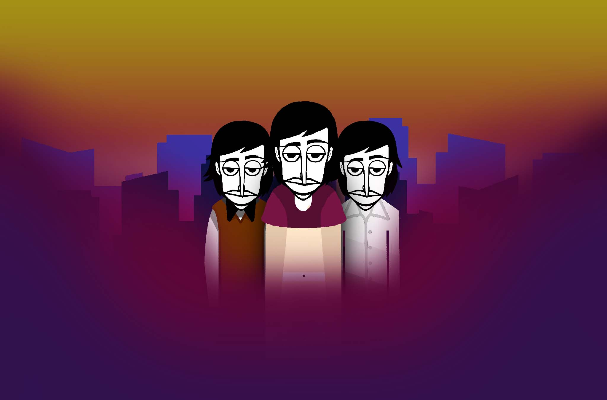

- The Choir -
| |
After 15 days of development, and I did everything myself, I can say that the mod is completely ready, or not... The fact is that my mod will have at least some kind of popularity, then I’m going to make a bonus |
|
MishaBring: Everything Geo9300: Original Project Status: Released Inspired by: The Choir Release Date: 2024 Linked Mods: The Choir |
 |
|
Download Links PC: Here Android: Here Developer Notes: ONLY NON HD |